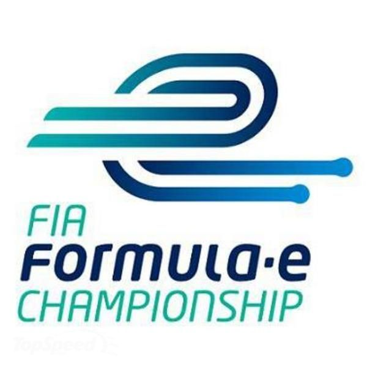

L'unique compétition existante est le Championnat du monde de Formule E régie par la FIA. C'est la première fois qu'une compétition est totalement électrique et urbaine.
Les courses ne sont pas jugées en fonction du nombre de tour, mais en fonction du temps. En effet, la durée maximale de chaque course est de 45 minutes plus 1 tour supplémentaire avant la présentation du drapeau à damier représentant la ligne d'arrivée. La durée faible de la course est due à la quantité d'énergie transportée.
Le règlement dans le championnat

Logo officiel du championnat du monde de Formule E
L'attribution des points
Tout d'abord, les 10 premiers pilotes de chaque course remportent des points allant de 25 à 1. Ils sont établis comme ceci dans de nombreuses compétitions par la FIA (voir le lien). Des points additionnels peuvent être attribués comme le meilleur temps au tour.
Sécurité
Il existe différents drapeaux afin de signaler facilement et rapidement aux pilotes ce qu'il se passe sur la piste. Certes il y a des communications entre pilotes et écuries mais l'agitation des drapeaux a un effet visuel immédiat.
Par exemple, le drapeau à damier noir et blanc signifie la ligne d'arrivée et donc la fin de la course, un drapeau jaune signifie qu'il y a un incident sur le piste, le vert correspondant à la reprise normale de la course tandis que le rouge correspondant à l'interruption de la course. Un autre, celui noir à rond orange prévient un pilote qu'il rencontre un problème dangeureux (mécanique), doit impérativement rentrer au stand.
BMW i8, "safety-car" officielle de la Formule E
Une voiture de sécurité appelée "safety-car" est présente (et elle aussi électrique) afin de ralentir les pilotes en cas d'incident majeur sur la piste.
Limitation de la puissance
Avant la course, il y a des séances où chaque pilote peut s'entraîner dans sa monoplace. Lors du Shakedown, la puissance de la voiture est limitée à 110kW alors qu'en essais et en qualifications, elle l'est à 200kW. En course, elle est limitée qu'à 180kW avec un surcroit temporaire de puissance lié au FANBOOST.
Le FANBOOST est un boost de puissance accordé aux vainqueurs d'un vote de fans. Ceci permet aux pilotes d'être en intéractions avec ses fans, mais aussi et surtout d'obtenir assez de puissance moteur afin de porter une attaque ou défendre sur un autre adversaire. Pour plus de précision sur la puissance, voir cette page-ci.
Les écuries
Dans chaque écurie, il peut y avoir un maximum de 2 pilotes titulaires et 4 voitures. Pour le E-Prix, chaque pilote a droit à 2 voitures car les batteries ne sont suffisamment évoluées pour tenir sur toute la durée de l'épreuve. Il y a plus d'explications sur cette page. Il peut y avoir 10 équipes dans la compétition donc nous pouvons avoir un maximum de 20 pilotes concourants la même saison qui a une périodicité de 10 mois. Pour la saison 5, il y aura 11 écuries inscrites.
Comme nous pouvons le voir, la Formule E n'est pas d'une grande ampleur car les constructeurs automobiles les plus connus préfèrent investir dans la F1 comme Renault, Ferrari ou Honda (McLaren). Cependant, les constructeurs (Audi, BMW, Nissan ...) commencent à s'investir dans la FE car ceci permet d'améliorer les différents composants comme la batterie pour les voitures électriques de demain.
Courses
La compétition se déroule exclusivement sur des circuits urbains, c'est-à-dire en pleine ville. De nombreuses villes accueillent la compétition comme Pékin, Paris, New York, Londres.